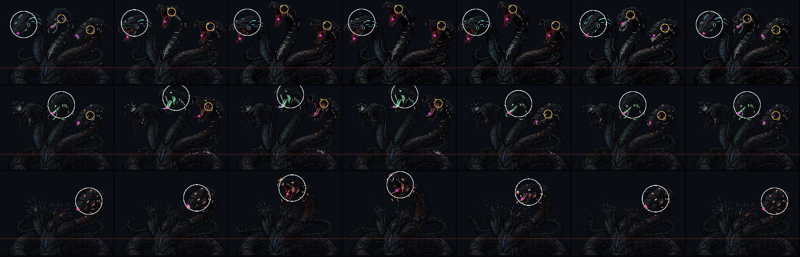
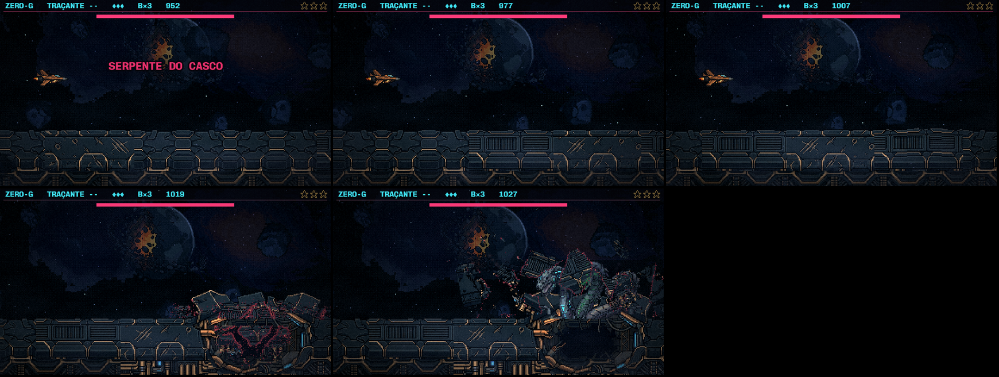

A Serpente no casco (S1b)
29/10/2026 · spec docs/superpowers/specs/2026-10-29-serpente-luta-s1b-design.md · plano docs/superpowers/plans/2026-10-29-serpente-luta-s1b.md · ← os conceitos. Nada foi commitado.
O que entrou no jogo, com as suas escolhas (o erguer, a rachadura R3, o corte, a laranja com mandíbula, a chuva tripla e uma cor por cabeça):
- A chegada: o casco para inteiro na arena, treme sobre ela e estoura de dentro para fora, nos próprios pixels. O rombo se abre e ela sobe por ele.
- O corte: só pescoços e cabeças saem do casco, em qualquer momento. Dentro de um buraco, o corpo dela some no escuro.
- Em repouso: a base fica no rombo, e ela só sobe e desce.
- O bote por baixo do casco:
- Ela mergulha.
- As placas sobem sobre ela e a fissura fica atrás.
- Embaixo da nave, a ponta trava branca.
- O casco estoura e ela sobe do rasgo fazendo o erguer.
- A janela.
- Ela afunda, a lombada volta ao rombo, e o rasgo e a fissura se fecham.
- A chuva tripla: no rombo, ela se ergue e as bocas acendem, cada uma na sua cor. Cada cabeça viva cospe para o alto, e cai uma onda por cabeça, cada uma com um vão. Ela alterna com o bote: a de 3 cabeças faz bote → chuva, e a de 2 abre com a chuva.
- As cores: a cabeça ciano cospe azul (um azul fundo, para não confundir com o ciano do tiro da nave), a verde cospe verde e a laranja, âmbar. Cada tiro sai da boca de quem atira.
- A morte da de 3 cabeças: ela afunda no rombo e fica o silêncio. As três luzes convergem dentro do buraco, vem o clarão, o lábio estoura e a maior irrompe dele. Não há véu preto.
1. A luta, no jogo
Os filmes são da luta inteira no treino, jogada pela sonda que desvia: ela sai para o lado na trava e procura o vão na chuva.
2. A dificuldade, medida
Os mesmos dois jogadores de sonda das outras rodadas, no treino, com a mesma sorte. Os dois param em x 60, seguem a altura da cabeça viva e andam na velocidade da nave:
- o parado não desvia;
- o que desvia sai 40 px para o lado na trava e procura o vão na chuva.
| a luta | contatos (o bote e a janela) | tiros levados | |
|---|---|---|---|
| antes da S1, parado | 24,9 s | 0 | 8 |
| S1, parado | 39,7 s | 5 | 8 |
| S1, desviando | 41,4 s | 0 | 2 |
| S1b, parado | 42,0 s | 7 | 10 |
| S1b, desviando | 41,7 s | 0 | 15 |
Quem fica no lugar leva o bote. Quem desvia não leva, mas a chuva cobre o alto da tela e cobra quem não acha o vão. Para quem desvia, a janela rende 40 do total de 210 de vida, e o resto ela leva no rombo.
3. O que a sonda achou no caminho
- O círculo de acerto da S1 ficava no pescoço. Os números de julho vinham do centro da cor da cabeça, que soma as costuras do pescoço. Na ciano e na verde, o círculo caía 25 a 35 px de arte abaixo do crânio e não tocava a cabeça desenhada. Agora fica no crânio, medido na grade em cada quadro do gesto:

O erguer das três formas (quadros 0, 2, 4, 8, 12, 14 e 16). Em branco, o círculo de acerto da cabeça viva. Em amarelo, as outras cabeças. Em rosa, as bocas. A linha vermelha é o corte. - Na forma de 1 cabeça, a cabeça laranja varre ~39 px para a esquerda ao se erguer e mordia quem tinha desviado para lá. Agora o bote mira a cabeça na pose segurada.
- Os tiros que sumiam: a vaga reaproveitada do pool guardava a posição velha no corpo físico. A gota que tinha acabado de sair pelo alto levava a onda seguinte junto, e 9 de 10 gotas azuis sumiam. Isso já valia para os tiros dela na S1.
- O estouro do bote passou por quatro versões com o motor de destroços: uma laje rachada, uma nuvem vermelha que lia como carne, depois cacos de gelo, todos cobrindo os pescoços por um segundo. Ficou o cascalho das placas da crista saltando por trás dela, com um clarão branco curto na crista. A chegada continua com o motor de destroços, na quebra lenta de costuras vermelhas.
- A morte: o motor quebrava o desenho inteiro, e as roscas escondidas saíam em pedaços por cima do casco. Agora só quebra o que está acima do corte.
4. A fase de verdade

- aos 95 s, a faixa inteira chega com o casco;
- aos 98 s, o mundo freia;
- aos 101 s, o casco treme;
- aos 102 s, estoura e ela sobe.
5. Para você julgar
- Se o movimento convence agora: o casco reagindo, ela saindo dele, o erguer.
- O tempo da trava branca (0,55 s), a velocidade da rachadura (300 px/s) e a janela (1,1 s).
- A chuva: a densidade (um vão de duas gotas por onda), a velocidade (110 px/s) e de quanto em quanto tempo ela vem.
- O estouro da chegada (as costuras vermelhas) e o do bote (o cascalho e o clarão).
Os números ficam em src/entities/numerosSerpente.ts.
6. Depois
- S2: a maior com a arte nova, que se solta do casco e fica móvel.
- S3: os outros gestos, como o recuo no aviso e o cuspe antes do leque.